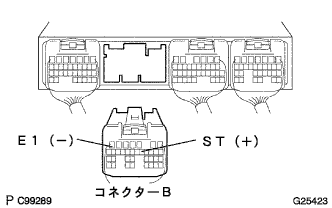

DTC P1790/65 STソレノイド系統 |
| DTC No. | DTC検出条件
| 点検部位 |
|---|---|---|
| P1790/65 |
|
|
| 手順1 | トランスミッション ワイヤ単体点検（ST） |
トランスミツシヨンワイヤのコネクタを切り離す。
 |
SST(トヨタエレクトリカルテスター)を使用して、端子間の抵抗を点検する。
| 端子番号(端子記号) | 抵抗値[Ω] |
|---|---|
| 2(ST)←→ボデーアース | 11-15(20°C) |
|
| ||||
| OK | |
| 手順2 | ワイヤハーネスまたはコネクター点検（トランスミツシヨンワイヤ-エンジンコントロールコンピユータ） |
トランスミツシヨンワイヤのコネクタを接続し、エンジンコントロールコンピユータのコネクタBを切り離す。
|  |
SST(トヨタエレクトリカルテスター)を使用して、端子間の抵抗を点検する。
(端子配列は参照)
| 端子番号(端子記号) | 抵抗値[Ω] |
|---|---|
| B12(ST)←→B7(E1) | 11-15(20°C) |
|
| ||||
| OK | ||
| ||
| 手順3 | トランスミッション ソレノイド NO.3単体点検（ST） |
トランスミツシヨンソレノイドNo.3(ST)のコネクタを切り離す。
SST(トヨタエレクトリカルテスター)を使用して、ソレノイド端子とボデー間の抵抗を点検する。
|
| ||||
| OK | ||
| ||